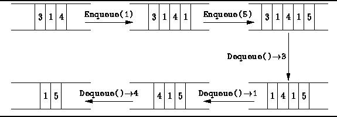
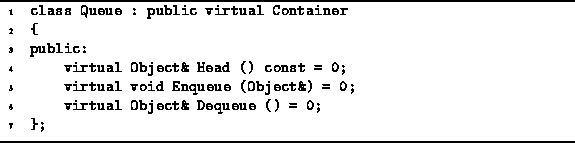

Data Structures and Algorithms
with Object-Oriented Design Patterns in C++
Data Structures and Algorithms
with Object-Oriented Design Patterns in C++
In the preceding section we saw that a stack comprises a pile
of objects that can be accessed only at one end--the top.
In this section we examine a similar data structure called a
single-ended queue .
Whereas in a stack we add and remove elements at the same end of the pile,
in a single-ended queue we add elements at one end
and remove them from the other.
Since it is always the first item to be put into the queue
that is the first item to be removed,
a queue is a first-in, first-out
or FIFO data structure.
Figure  illustrates the basic queue operations.
illustrates the basic queue operations.

Figure: Basic Queue Operations
Program gives the Queue abstract class definition.
The Queue class is derived from the Container class.
The Queue class interface comprises all the functions inherited
from the base classes plus the three function,
Head, Enqueue, and Dequeue.

Program: Queue Class Definition
As we did with stacks,
we will examine two queue implementations--an array-based one and a pointer-based one.
The array-based implementation uses the Array<T> class
and the pointer-based implementation, the LinkedList<T> class,
both of which are defined in Chapter .
 Copyright © 1997 by Bruno R. Preiss, P.Eng. All rights reserved.
Copyright © 1997 by Bruno R. Preiss, P.Eng. All rights reserved.